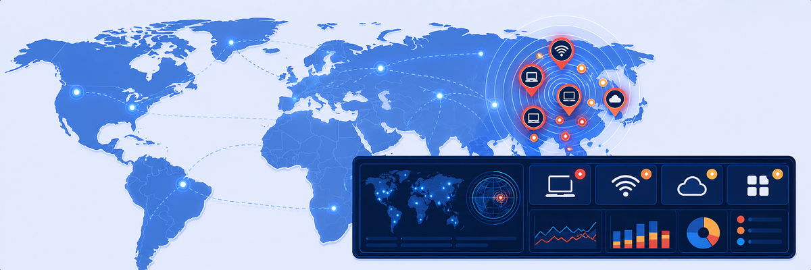
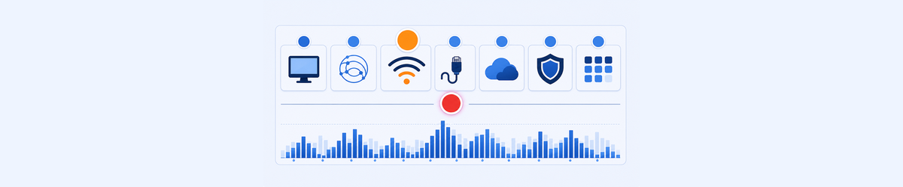
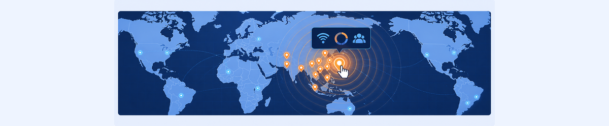
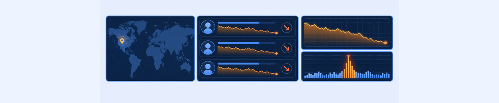

Lab 8: Incident Monitoring on Incident Dashboard
LAB 8
Scenario: Operations staff need to proactively monitor for incidents affecting multiple users. Use the ZDX Incidents Dashboard to identify and drill into a Wi-Fi incident.

THINK FIRST · INCIDENT DETECTION
Individual user complaints are reactive. The Incidents Dashboard is proactive: ZDX AI/ML correlates signals from many devices to detect an incident’s epicenter — a single Wi-Fi access point, an ISP segment, or a Zscaler data center — before the issue has been widely reported.
- The Incidents Dashboard shows incidents across 7 key areas: Device, DNS, Wi-Fi, Last Mile ISP, Intermediate SP, Zscaler, and Application. For each area, give one example of a real-world cause that would trigger an incident in that category.
- An Incident has a ZDX Score Drop metric and an Average Wi-Fi Access Point Latency metric. Why are both needed to characterise a Wi-Fi incident? What does each one tell you that the other doesn’t?
- An incident shows 4 Impacted Users from 1 Geolocation. The SSID is 3com_wifi. What would you tell the on-site IT team to investigate, and what information from the Incident Details page would you include in your message?
Task 8.1: View Incidents Dashboard
1 Open the Incidents Dashboard
- In the ZDX Admin Portal, click on Dashboard › Incidents Dashboard.
- Note the number of Wi-Fi Incidents reported in the selected time range (14 Days).
- Review the Incidents Across Key Areas icons (Device, DNS, Wi-Fi, Last Mile ISP, Intermediate SP, Zscaler, Application).

My Questions
My Notes
Task 8.2: Identify Incidents Epicenters
2 View the Incidents by Epicenters Map
- Scroll down on the Incidents Dashboard to view the Incidents by Epicenters map.
- Note the location of the incidents markers showing epicenters and the number of incidents indicated.
- Click on an incidents marker to see an expanded view of the types of incidents at that epicenter.
- Click View Incident Details to open the incident detail page.

My Questions
My Notes
Task 8.3: View Incident Details
3 Drill Into the Incident
- On the Incident Details page, review:
- SSID name and Wi-Fi Access Point details
- Impacted Users by Geolocations
- Top Impacted Users (with ZDX Score trends)
- Scroll down to Key Metrics and note the ZDX Score Drop and Maximum Wi-Fi Access Point Latency graphs.

My Questions
My Notes
MENTAL NOTE
Incidents Dashboard = proactive multi-user issue detection via AI/ML. 7 key areas: Device, DNS, Wi-Fi, Last Mile ISP, Intermediate SP, Zscaler, Application. Incidents by Epicenters map clusters affected users geographically. Incident Details: SSID, Impacted Users by Geolocation, Top Impacted Users, Key Metrics (ZDX Score Drop + AP Latency).